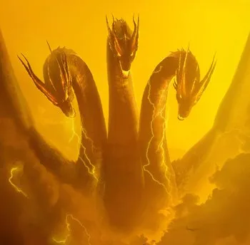
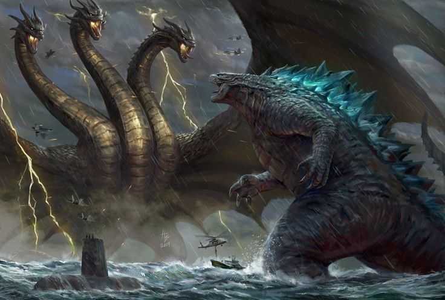
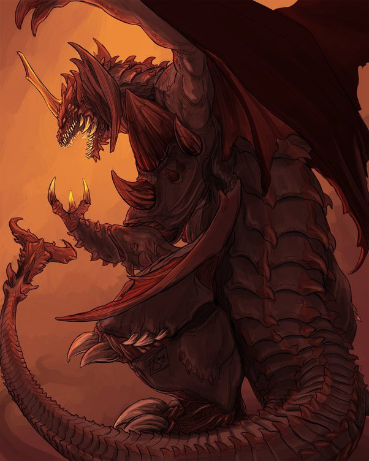
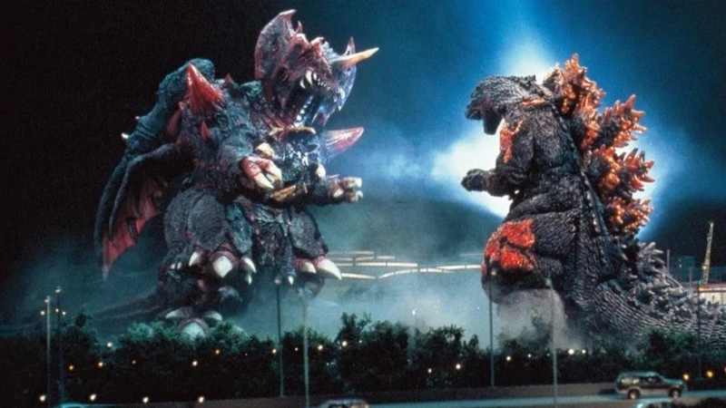
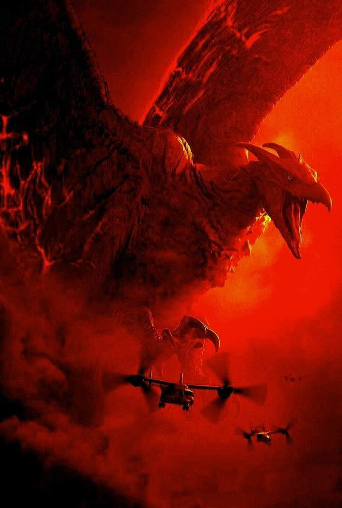
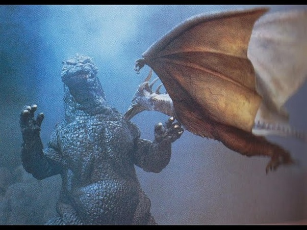
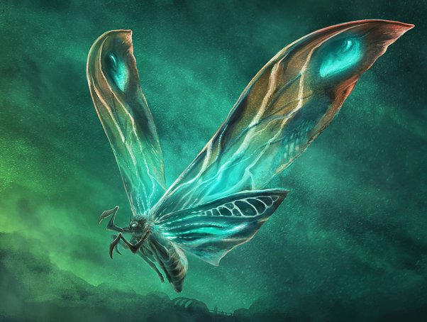
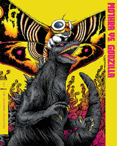
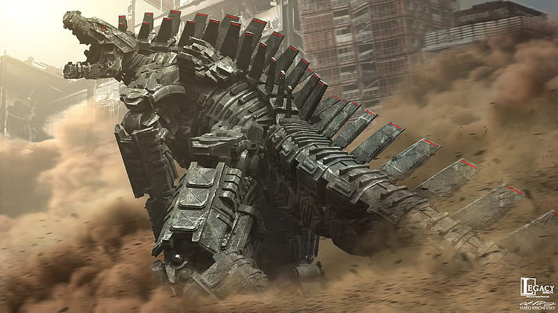
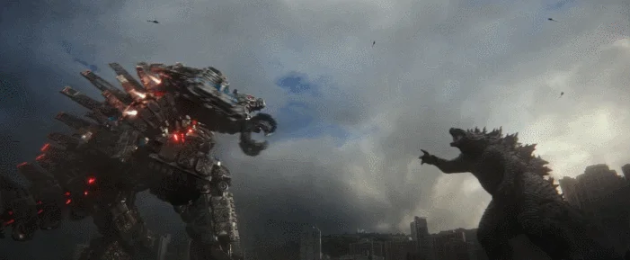

- King Ghidorah

King Ghidorah es un kaiju dragón de tres cabezas creado por Toho que apareció por primera vez en la película de 1964, "Godzilla, Ghidorah The Three-Headed Monster". Es conocido por ser el archienemigo de Godzilla y se caracteriza por ser un monstruo dragón dorado con dos piernas, tres cabezas en cuellos largos, alas gigantes de murciélago y dos colas. El diseño de King Ghidorah fue inspirado por Yamata no Orochi, un dragón de ocho cabezas de la mitología japonesa. Fue traído a la vida en la pantalla por un actor de dobles que usaba un elaborado traje de tres piezas, complementado por un equipo de titiriteros encargados de controlar los numerosos apéndices del traje. El diseño visual de King Ghidorah fue creado principalmente por Eiji Tsuburaya, basándose en una descripción mínima en el guión que mencionaba: "Cuenta con tres cabezas, dos colas, y una voz como una campana".
Origenes:
King Ghidorah tiene un origen diferente en cada unsa de sus diferentes versiones ahora daremos a conocer su origen en alguna de estas versiones.
En la serie Showa, King Ghidorah se dice que ha atacado a Venus por su propio pie a muchos miles de años, acabando con toda la civilización del planeta. Luego atacó la Tierra, pero fue repelido por los monstruos de la Tierra. En algún momento, fue llevado el control de los Xiliens y usado como un peón en su invasión de la Tierra. King Ghidorah estaba destinado a ser tomado bajo el control de diferentes razas alienígenas, causando la pérdida de su historia en el camino. El Garogas más tarde afirmó haber creado a King Ghidorah, pero si esto es cierto o no es nunca definitivo, explicó, dada la historia antigua del monstruo.
En Godzilla vs King Ghidorah, King Ghidorah es el resultado de la fusión de 3 Dorats debido a una bomba atómica que cayó en Isla de Lagos, que fue la isla donde se mutó el Godzillasaurus original. Los Dorats fueron puestos en la isla por los Futurians.
En la serie Millennium, King Ghidorah era un dios serpiente de ocho cabezas, o Yamata no Orochi, que fue despertado antes de tiempo antes de que pudiera crecer sus ocho cabezas, en lugar solamente le crecieron tres, pero luego finalmente mas adelante recupera su verdadera forma.

- Destoroyah

Destoroyah, cuyo nombre proviene de "destructor", es comúnmente conocido como "Destroyer" en versiones dobladas de la película, aunque "Destoroyah" es el nombre oficial registrado por Toho. El uso de "Destroyer" no es tan frecuente en diversos mercados debido a que la palabra en sí no podía ser registrada como marca por Toho.
Destoroyah se caracteriza por su capacidad de crecer rápidamente y adoptar diversas formas a lo largo de la película, que incluyen su estado microscópico, una forma de 3 mm, una forma insectoide de 2 metros, varias formas de cangrejo de hasta 18 metros, una forma agregada más grande similar a un cangrejo, una versión voladora parecida a una raya, y finalmente, su imponente forma bípeda de 120 metros. Este kaiju también comparte algunas características con los extraterrestres de la saga Alien.
El origen de Destoroyah se remonta a una colonia de crustáceos precámbricos que fueron despertados y mutados tras la detonación del Destructor de Oxígeno utilizado para matar al Godzilla original en 1954. Destoroyah comparte similitudes con Hedorah, otro enemigo de Godzilla, ya que ambos experimentan cuatro etapas en su ciclo biológico y representan rivales poderosos y difíciles de vencer para Godzilla.
Origen:
Destoroyah fue visto por primera vez atacando peces en una pecera en su forma microscópica, convirtiéndolos en huesos. Con el tiempo se convirtió en su etapa juvenil
y atacó a un almacén. El ejército atacó a Destoroyah, pero muchos de ellos fueron asesinados.
Se descubrió que Destoroyah podía ser asesinado con temperaturas frías, y un plan para acabar con el se puso en acción. El plan parecía funcionar, pero el juvenil Destoroyah combina en un gran agregado Destoroyah, y se descubrió que eran criaturas prehistóricas que fueron mutados por el destructor de oxígeno cuando el primer Godzilla fue asesinado. Destoroyah se transforma en Flying Destoroyah, y atacó Tokio. Godzilla Júnior llegó a Tokio y luchó contra Destoroyah en su forma agregada. Destoroyah casi mató a Godzilla Junior, pero Godzilla llegó y lo salvó. Destoroyah salió volando en un almacén, pero él volvió a surgir en su forma final. Llevando a Godzilla Júnior fuera y lo dejó caer en otro almacén, causándole la muerte. Godzilla estaba furioso, y atacó a Destoroyah. Destoroyah y Godzilla lucharon, pero Destoroyah llevaba la ventaja sobre Godzilla. Godzilla se transformo en su etapa "Burning", dándole fuerza extra para derrotar a Destoroyah. Destoroyah fue derrotado temporalmente y trató de volar lejos de Godzilla, pero los militares lo atacaron con cañones de hielo, lo congelaron y termino cayendose al suelo, donde murió.

- Rodan

Rodan, originalmente llamado Radon en japonés, es un nombre derivado de una contracción de "pteranodon", reflejando su apariencia similar a este pterosaurio. En Estados Unidos, el nombre fue cambiado y licenciado como Rodan para su uso y distribución.
En cuanto a su apariencia, Rodan se parece mucho a un pterosaurio, específicamente a la especie Pteranodon, aunque con dimensiones gigantescas y la capacidad de caminar erguido sobre dos piernas. Su piel varía en tonos que pueden ir desde el café hasta el borgoña, con matices amarillos, y se caracteriza por tener un pecho puntiagudo y dos o tres cuernos en la parte posterior de su cabeza.
Origen:
En Rodan de 1956, había dos Rodans, un macho y una hembra que eran ambos compañeros. Ellos fueron despertados por las operaciones mineras en Kitamatsu junto con un enjambre de insectos prehistóricos llamados "Meganulons". Una de las criaturas, es de suponer que el macho, realizó un vagabundeo aire esquivo a través de varios países del Pacífico como Filipinas y China antes de que finalmente se revela después de que emerge de los pies del Monte Aso. Como se corre la voz de la existencia del monstruo, no se perdió el tiempo, ya que la fuerza aérea japonesa podia rastrear las actividades de la amenaza,lo que lleva directamente a la ciudad de Fukuoka. Después de una pelea de perros ariel feroz, un avión de combate se estrella en el ala de Rodan hiriendo a la bestia y neutralizar su capacidad de volar a velocidades supersónicas, aunque esto no impide que el Pteranodon desde que puso la cintura a la ciudad. Muy pronto, la segunda Rodan parece acompañar a su pareja a la seguridad, poner fin a la masacre. Como los dos monstruos se preparan para hibernar por regresar a su nido en el Monte Aso, fuerza de defensa de Japón se realiza un último esfuerzo para derrotar a los Rodans bombardeando el volcán activo, lo que provocó una erupción. Como los dos compañeros intentan escapar, uno está incapacitado por un misil y cae en la lava fundida, quemandolo. El segundo Rodan luego voló hacia su compañero moribundo, esto hace que el también se queme en la lava y los dos mueran finalmente salvando a la aldea.

- Mothra:

El nombre de Mothra proviene de la palabra inglesa "moth" que significa polilla, y del sufijo "-ra", que es típico en los nombres de kaiju. En japonés, debido a la ausencia de dentales fricativas, su nombre se pronuncia aproximadamente como Mosura.
Desde su primera aparición en el cine, Mothra ha sido representada en varias etapas de su ciclo de vida. Los huevos de Mothra son decorativos, con ondulaciones en azul y amarillo. De estos huevos eclosiona una larva de gran tamaño, una oruga segmentada de color marrón que recuerda a un gusano de seda, con ojos brillantes que pueden ser azules, rojos, o en ocasiones de ambos colores. En raras ocasiones, gemelos pueden emerger de un mismo huevo. Esta oruga eventualmente teje un capullo de seda alrededor de sí misma, entrando así en la etapa de pupa. De este capullo emerge finalmente el imago, o forma adulta de Mothra, una criatura gigante con alas coloridamente brillantes que sigue el ciclo de vida típico de las polillas, que incluye la eventual muerte del imago.
En la película "Godzilla, Mothra and King Ghidorah: Giant Monsters All-Out Attack", Mothra es retratada con ojos morados, aunque normalmente sus ojos son de color azul.
Origenes:
Los orígenes de Mothra han variado un poco de película a película, pero siempre es retratado como un ser benévolo y antigua que posee un cierto nivel de divinidad.
En la era Showa, Godzilla contra Mothra, Rebirth of Mothra, Godzilla: Tokyo S.O.S y Godzilla: Final Wars, Mothra es la diosa guardiana de infant island remota en el sur del Océano Pacífico. Allí, ella renace perpetuamente a través de un huevo y es adorado por los nativos de la isla. Ella es hablada por dos hadas telepáticas en miniatura, o bien llamadas las Shobijin, Cosmos, o Elías.
El origen de mothra ha ido en mayor profundidad en Godzilla contra Mothra. Esta película explica que Mothra era el guardián del mundo antiguo, la protección de la vida en la Tierra de las amenazas. Cuando una civilización antigua creó un dispositivo de control de clima, la tierra se convirtió en ofendidos y creó un Mothra oscuro, llamado Battra, para destruirlo. Después de destruir el dispositivo, Battra procedió a erradicar a toda la civilización y trató de exterminar a toda la humanidad, creyendo que los seres humanos son una plaga para el planeta. Mothra desafió a Battra y lo derrotó, sellándolo a distancia en el Mar del Norte. Después de esta batalla, Mothra y el Cosmos, los únicos restos de la antigua civilización, se instalaron en la isla infantil a distancia, donde vivieron en paz durante los próximos doce mil años.
En Rebirth of Mothra, se establece que Mothra es el último miembro vivo de una antigua raza de polillas gigantes del guarda que defendían la Tierra a lo largo de su historia. En su vejez, Mothra vivió en soledad con el Elias en la infant island, y con la ultima de su fuerza convocado sucesivamente un huevo para continuar su legado después de su muerte.
En Godzilla, Mothra and King Ghidorah: Giant Monsters All-Out Attack, el origen de Mothra recibe su primera modificación importante. En esta película, Mothra es uno de los tres monstruos de la Guarda y la diosa del mar. En la antigüedad, Mothra y sus compañeros guardianes Baragon y King Ghidorah fueron asesinados por guerreros japoneses. Mothra fue enterrada bajo el Lago Ikeda, mientras que los guerreros que asesinó a su oró por su alma, de que ella regresara un día para salvar a Japón. Miles de años más tarde, el profeta Hirotoshi Isayama despertó a Mothra mediante la transferencia de las almas de los muertos honorables de Japón en ella, así que ella y los otros monstruos guardianes juntos podrían parar a godzilla

- MechaGodzilla:

El nombre "Mechagodzilla" deriva de "mecha", indicando su naturaleza robótica. El término "1" en su nombre original alude a que fue el primer Mechagodzilla en aparecer, mientras que el "2" en la versión japonesa, "Terror of Mechagodzilla", señala que fue el segundo modelo presentado.
En términos de apariencia, el Mechagodzilla original presenta características como dedos cortos equipados con misiles, una placa metálica en la mano con tres tornillos, y hombros menos definidos. Tiene botones naranja en el pecho y sobre la entrepierna, y una cola lisa con placas rectas, marcadas con las iniciales "MG".
El Mechagodzilla reconstruido para "Terror of Mechagodzilla" tiene dedos más largos, una placa metálica más grande en la mano, hombros más prominentes, y varios botones de plata. Las placas de la cola están en forma de V y lleva las iniciales "MG2" en sus brazos, identificándolo como "Mecha Godzilla 2".
Origenes:
En las series showa MechaGodzilla fue revelado por primera vez cuando luchó vs Godzilla como Fake Godzilla. Después de romper la mandíbula Anguirus, su disfraz fue destruido por Godzilla, pero continuó luchando. MechaGodzilla y Godzilla tanto dispararon sus vigas, pero las vigas explotaron tan pronto como se tocan entre sí. MechaGodzilla fue dañado, y Godzilla fue gravemente herido. MechaGodzilla se fijó un tiempo después, y fue enviado a detener al Rey César antes de ser despertado. No llegó a tiempo, pero él todavía era más poderoso que el César. Casi mató al rey César, pero Godzilla llegó. Los dos lucharon MechaGodzilla, y Godzilla utiliza sus nuevos poderes magnéticos para dibujar MechaGodzilla en sí mismo, lo que le permite eliminar su cabeza. MechaGodzilla había sido desactivado, y el Agujero Negro Planet 3 Aliens fueron derrotados
